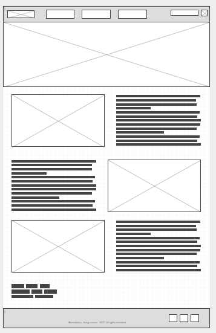

Find us
Address: 20-22 Brompton Road, Knightsbridge, London SW1X UK
Email: bio@biostat.co.uk
Phone: +44 7379 392 540
Navigation
Site Map
Home
Samples
Contact Us
Samples
Samples will show you how the course and the technological resources will improve your learning. The computational simulation tools are essential didactic methods capable of improving your learning experience during the classes. You will improve your biostatistics skills by using our simulators. Try here!
Contact us
Browse and rate our content and teaching methods, please. Your opinions and suggestions are important to us. As always, we are improving our services for you! Try here!
